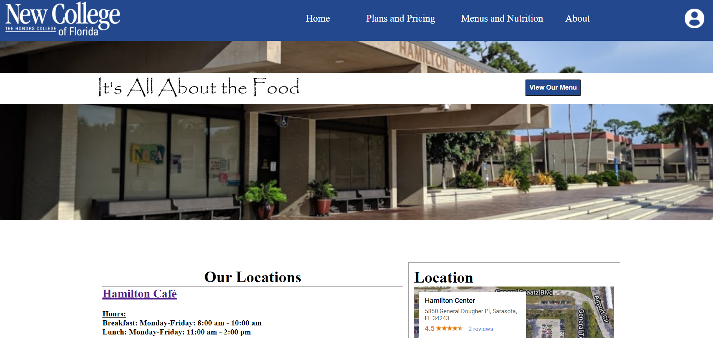
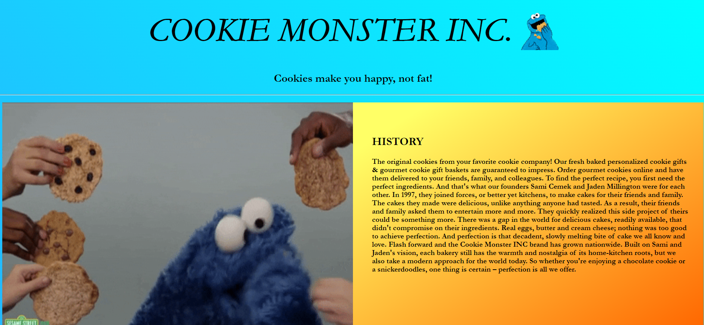
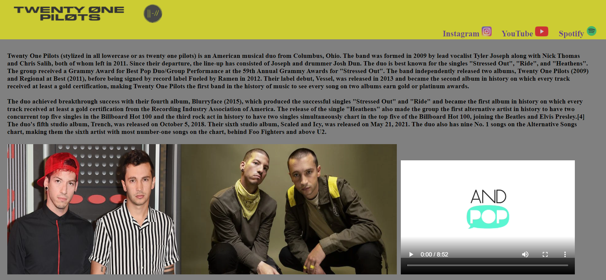
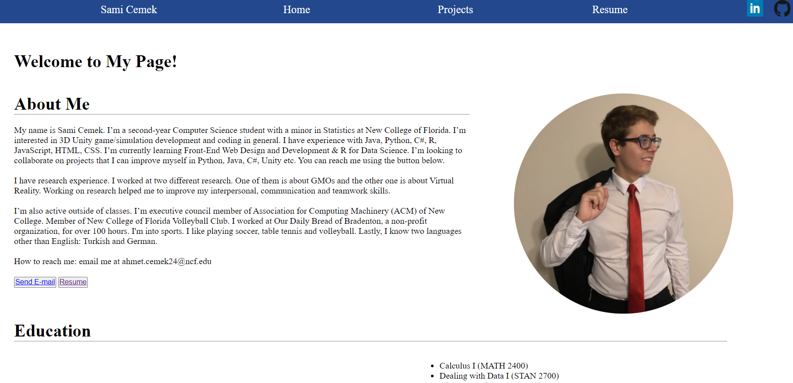

Sami Cemek
Welcome to My Page!
About Me
My name is Sami Cemek. I’m a second-year Computer Science student with a minor in Statistics at New College of Florida.
I’m interested in 3D Unity game/simulation development and coding in general.
I have experience with Java, Python, C#, R, JavaScript, HTML, CSS. I’m currently learning Front-End Web Design and Development & R for Data Science. I’m looking to collaborate on projects that I can improve myself in Python, Java, C#, Unity etc. You can reach me using the button below.
I have research experience. I worked at two different research. One of them is about GMOs and the other one is about Virtual Reality. Working on research helped me to improve my interpersonal, communication and teamwork skills.
I’m also active outside of classes. I’m executive council member of Association for Computing Machinery (ACM) of New College. Member of New College of Florida Volleyball Club. I worked at Our Daily Bread of Bradenton, a non-profit organization, for over 100 hours. I'm into sports. I like playing soccer, table tennis and volleyball. Lastly, I know two languages other than English: Turkish and German.
How to reach me: email me at ahmet.cemek24@ncf.edu
Education
I'm a second-year and pursuing my Bachelor of Arts degree in Computer Science with a minor in Statistics from New College of Florida. I took diverse courses from different fields at New College. Python, Object-Oriented Programming in Java, Virtual Reality are some of them. Taking different class help me to approach problems from different perspectives and improve my problem-solving skill. You can see the all classes that take so far on the right side.
- Calculus I (MATH 2400)
- Dealing with Data I (STAN 2700)
- Discrete Math (MATH 2250)
- Elementary German I (LANG 2610)
- Front-End Web Design and Development (CSCI 2450)
- Graph Theory (MATH 2300)
- Introduction to Virtual Reality Systems (CSCI 3655)
- Object Oriented Programming (CSCI 2400)
- Programming in Python (CSCI 2200)
- R for Data Science (STAN 3700)
- Rhetoric and Writing (WRTG 2140)
Projects
Front-End Web Design and Development
|
Metz Culinary Website Design and Development
This is one of the Front-End Design and Development class projects that I have worked on. For this project, we worked as a group of 2 to re-design and develop the website of the current food provider of New College of Florida. We wanted to redesign their page because as a student we use their pages every day and it is not usable. |
Website Link
 |
|
Cookie Website Design and Development
This is one of the Front-End Design and Development class projects that I have worked on. For this project, we worked as a group of 2 to re-design and develop the website for an imaginary cookie shop. |
Website Link
 |
|
Favorite Band - twenty one pilots website
This is one of the Front-End Design and Development class projects that I have worked on. I re-designed and develop the website for an the music band twenty one pilots. |
Website Link
 |
|
Personal Website
This is the current page that you are visiting right now. |
Website Link
 |
Virual Reality
|
Twizzlers
I made a VR(virtual reality) simulation using C# and a game engine called Unity about manatees and how boat hits affect them.In the simulation, the player dives underwater and plays as a manatee. There are mini-tasks where the player can learn how to play the simulation and use the VR controllers. Also, there are two different scenarios to experience as a manatee. The player can eat seagrasses, socialize with other manatees, go to the surface to take a breath, and sleep as manatees do. I used C# and Python to collect game analytics to run studies with college students and 7-12 year children in the future. |